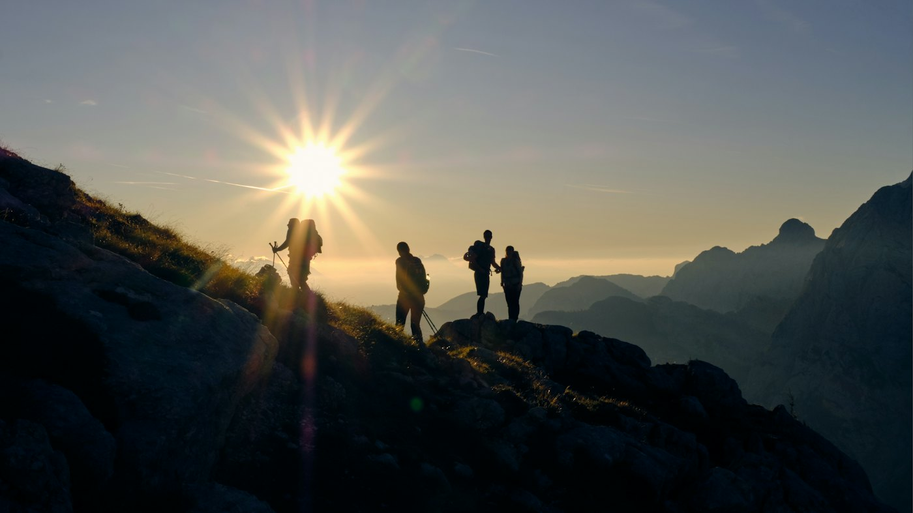
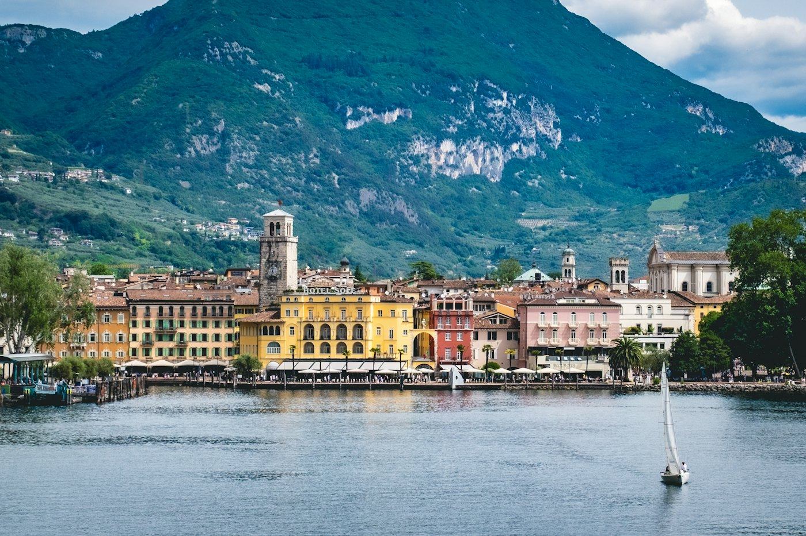
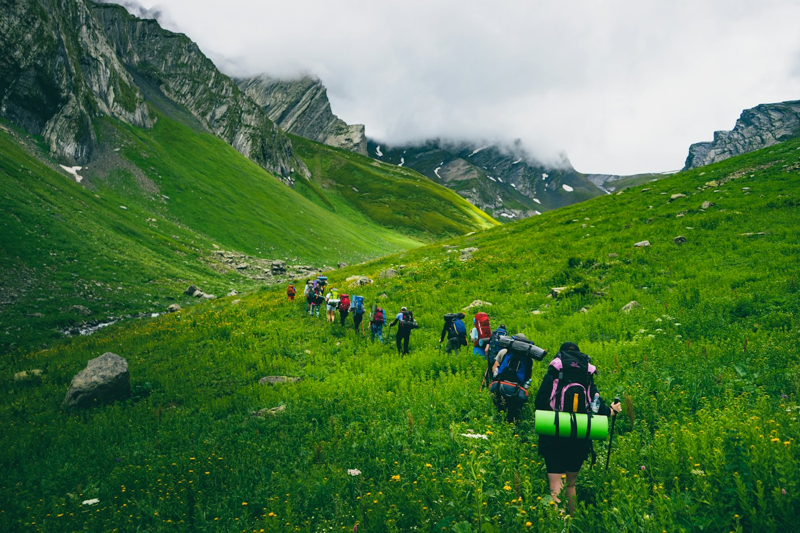
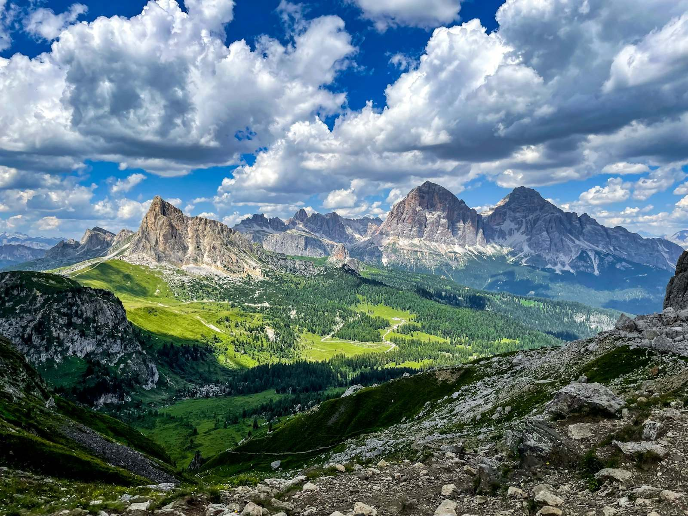

- 01
- 02
- 03
- 04

Il lavoro che avete chiesto
Il riquadro «Prossime partenze», in tutte e due le lingue.
Al posto della sezione attuale
Lo inseriamo in homepage sulla versione italiana e su quella inglese, senza toccare il resto del sito WordPress.
Si aggiorna da solo
Le partenze passate spariscono, i posti si scalano a ogni prenotazione, l'«ultimi posti» compare da sé.
Una sola scheda, due lingue
Inserite l'escursione una volta: titolo e note in italiano e inglese, date e posti in comune.